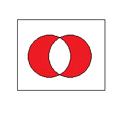

| | (論理和 棒記号?) | & (論理積 アンパサンド記号) |
| A | B | A & B |
| 0011 | 0101 = 0111 | 0011 & 0101 = 0001 |
| ^ (排他的論理和 ハット記号) | ~ (否定 チルダ記号) |
| A ^ B | ~A |
| 0011 ^ 0101 = 0110 | ~0011 = 1100 |
|  | |
//インクルード
#include <iostream>
#include <fstream>
#include <vector>
#include <string>
using namespace std;
//typedef宣言
typedef unsigned char BYTE;
typedef unsigned int UINT;
//ファイルサイズを返す
UINT file_size(ifstream &fin);
//メイン関数
int main(int argc,char *argv[]){
if(argc<2){
cout<<"ファイルをドラッグドロップしてください"<<endl;
getchar();
return -1;
}
string path=argv[1];//入力ファイルパス
vector<BYTE> data; //ファイルデータ
UINT size; //ファイルサイズ
{//ファイルの読み込み
setlocale(LC_ALL,"japanese");//ロケール設定
ifstream fin(path.c_str(),ios::binary);//ファイルオープン
if(fin.fail()){
return -1; //ファイル読み込みエラー
}
size=file_size(fin);//ファイルサイズ取得
data.resize(size);//メモリ確保
fin.read((char*)&data[0],size);//読み込み
}
{//暗号化
srand(size);//乱数初期化
for(UINT i=0;i<size;i++){//全データループ
data[i]=(data[i] ^ rand());//排他的論理和を取る
}
}
{//保存
string outstr=path;
ofstream fout(outstr.c_str(),ios::binary);
fout.write((char*)&data[0],size);
}
return 0;
}
//ファイルサイズを返す
UINT file_size(ifstream &fin){
UINT pos=fin.tellg();//現在位置保存
UINT size=fin.seekg(0,ios::end).tellg();//最後にシークして位置取得→サイズ
fin.seekg(pos);//元の位置に戻す
return size;//サイズを返す
}